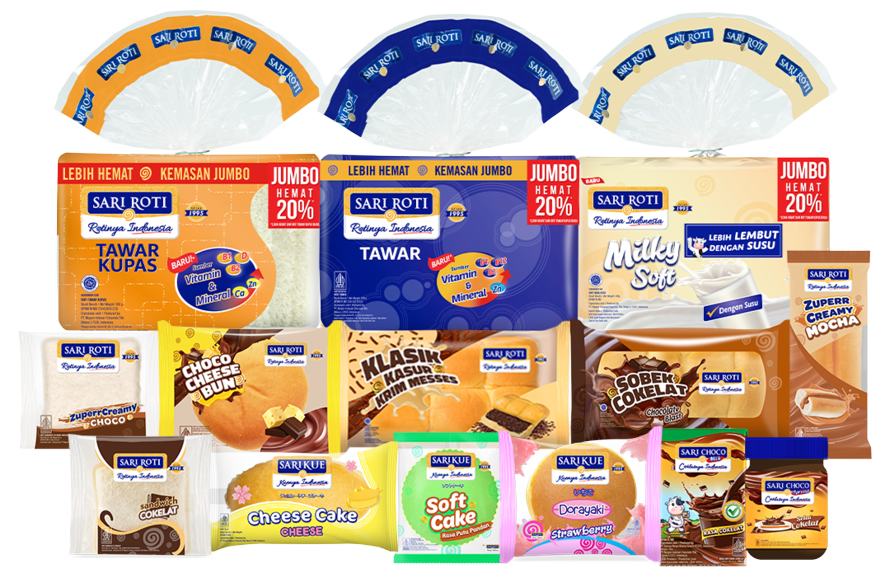

Welcome to Sari Roti
Sari Roti telah menjadi pemimpin dalam industri roti sejak tahun 1980. Kami berdedikasi untuk menyediakan roti berkualitas tinggi yang dibuat dengan bahan-bahan terbaik dan proses pembuatan yang higienis.

Kualitas Terbaik
Di Sari Roti, kami memahami pentingnya kualitas dalam setiap potongan roti yang Anda nikmati. Produk kami dibuat dengan:
- Bahan-bahan alami dan segar.
- Proses pembuatan yang higienis dan modern.
- Resep tradisional yang telah terbukti.

Komitmen Kami
Kami berkomitmen untuk memberikan yang terbaik bagi pelanggan kami. Dengan Sari Roti, Anda mendapatkan roti yang:
- Segar setiap hari.
- Bebas dari bahan pengawet buatan.
- Diproduksi dengan standar kualitas tinggi.